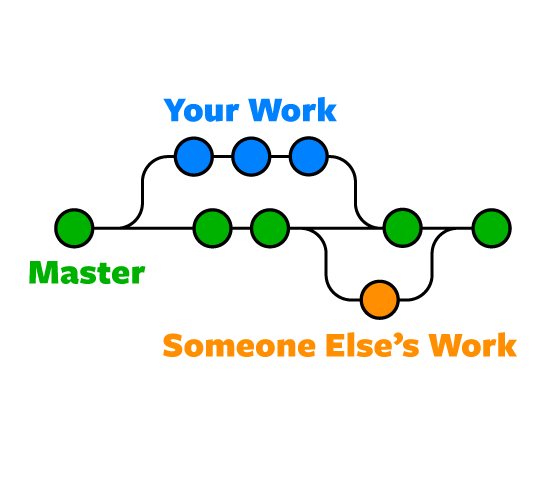

Welcome to GITiquette

Source: Git Diagrams
GITiquette is a short, beginner-friendly guide to Git for students, classmates, and anyone who wants to stop losing track of file versions. In this tutorial, you will learn what version control is, why Git matters, and how to use the most common tools with confidence. We explain everyday topics such as commits, branches, merges, and pull requests in plain language so you can follow along even if you have never used Git before. The goal is not just to teach commands, but also to show good teamwork habits that make collaboration smoother and less confusing. By the end, you should understand how to keep your work organized, share changes safely, and avoid the version mix-ups that Git was designed to solve.
About the team
Meet the team behind this tutorial and see how each member helped build the project. Visit the About page to learn more about our roles and contributions.